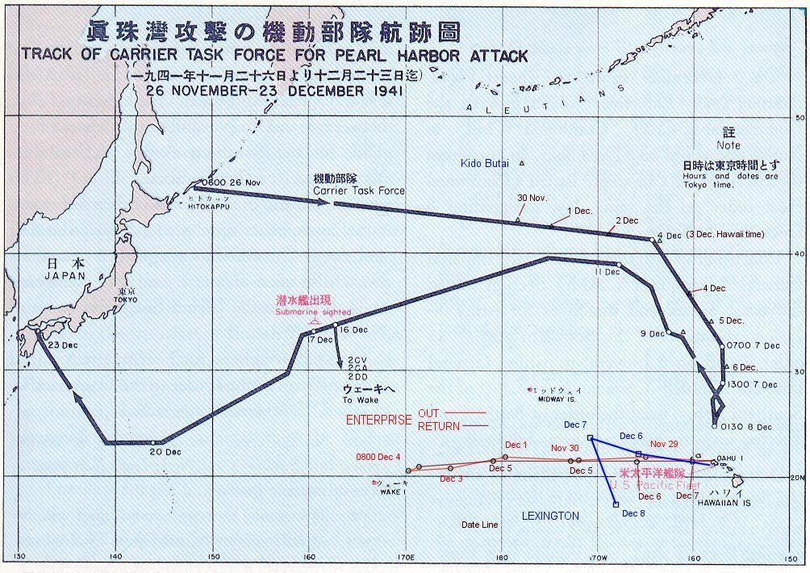

Pearl Harbour - przbieg inwazji
Warnet > II Wojna Światowa > Pearl Harbour
Autor: Mateusz Kmieciak

PEARL HARBOR PRZEBIEG WYDARZEŃ
7 grudnia 1941 roku; godzina 07:55 czasu hawajskiego; baza amerykańskiej floty Pearl Harbor została zaatakowana przez japońskie siły. Niespodzieane udzerzenie na amerykański port stał się
pierwszą z trzech dużych operacji zaczepnych Japonii.
Celem Japończyków było zadanie strat na tyle poważnych by móc w miarę sprawnie przeprowadzić dwie kolejne operacje
na Filipinach i Malezji.
Pomysł ataku na Pearl Harbor narodził się w lutym 1941 roku, jednak prace nad planem ataku rozpoczęto dopiero latem. Japończycy skupili się początkowo na jak najdokładniejszym zebraniu danych, które umożliwiiałyby im jak najszybszy
i dokładniejszy atak. Po ich zebraniu, w listopadzie plan był już ukończony i oczekiwał na realizację.
Zniszczenie Pearl Harbor miało dać Japończykom swobodę
w podejmowaniu działań na Pacyfiku.

JAPOŃCZYCY ATAKUJĄ!
W skład sił uderzeniowych Japonii wchodziło 6 lotniskowców, 2 szybkie pancerniki, 2 ciężkie krążowniki, 9 niszczycieli
i 3 okręty podwodne,
które wspierane były przez zbiornikowce i transportowce zaopatrzeniowe. Admirał Chuichiego Nagumo został mianowany na dowódcę operacji
Lotniskowce wraz z eskortą pancerników i krążowników znajdujących się pod jego komendą wypłynęły z zatoki Tankan
na Wyspach Kurylskich 26 listopada. Zachowując ciszę radiową, grupa bojowa ruszyła na południe trasą omijaną przez statki.
Przed godziną 06:15 czasu lokalnego wszystkie samoloty z pierwszej tury nalotu były już w powietrzu. Dowodził im komandor Mitsuo Fuchida,
który przed atakiem na Pearl Harbor wykrzyczał słynne hasło: Tora! Tora! Tora!, będąc pewnym,
że element zaskoczenia amerykańskiej floty się powiódł. Miał rcję.
Siły japońskie w pierwszej kolejności zbombardowały lotniska, aby wniesieni się w powietrze amerykańskim myśliwcom. Następnie, ich celem stały się okręty
zacumowane w porcie. Priorytetem misji było jednak zniszczenie pancerników.
Cała japońska ofensywa twarła około dwóch godzin.
Bilans strat ukazuje druzgocącą klęskę Stanów Zjednoczonych. Podczas nalotu na Pearl Harbor siły amerykańskie straciły
w sumie 21 okrętów, w tym 2 pancerniki – „Arizonę” i „Oklahomę”. Zniszczonych zostało prawie 200 samolotów – większość
z nich nie była nawet w stanie wzbić się w powietrze.
Po stronie amerykańskiej poległo 2402 ludzi, a 1178 zostało ranionych. Dla porównania, Japończycy stracili 5 miniaturowych okrętów podwodnych i 29 samolotów. Zginęło 55 lotników i 9 żołnierzy na łodziach.
PRZYCZYNY PORAŻKI I TEORIE SPISKOWE
Po ataku na Pearl Harbor doszukiwano się przyczyn tak upokarzającej USA. Powstało na ten temat nawet kilka teorii spiskowych.
W wiekszośći opierają się one na założeniu, że prezydent Franklin D. Roosevelt specjalnie wplątał Stany
w II Wojnę Światową.
Mówi się, że wiedział on o niepokojach społecznych w Europie i specjalnie dążył do zirytowania przywódców Japonii nakładając liczne restrykcje na eksport surowców.
Kolejne wątpliwości budził fakt o mozliwości uprzedniego "zainscenizowania" nieprzygotowaniej obrony poru i wystawieniu jedynie najsłabszych i najstarszych jednostek w porcie.
Podobno mieli przechwycić meldunki radiowe Japończyków,
lecz rozmyślnie zataili tę informację przed Kimmelem i Shortem.
Waszyngton według teorii miał
postarać się, aby w dzień 7 grudnia w porcie pozostały tylko najstarsze pancerniki,
a trzy lotniskowce Floty Pacyfiku znajdowały się poza zasięgiem ataku.